Feature
あーすんについて
こだわりの食材、
やんばるの息吹。

Specialty ingredients,
The breath of Yanbaru.
やんばるを中心とした
力強い無農薬野菜
Strong pesticide-free vegetables
mainly from Yanbaru
世界自然遺産にも登録された沖縄北部（やんばる）地域を中心に、
シェフが直接畑や生産者様とお会いして厳選した食材を使用しています。
沖縄特有の土壌と強い太陽の光をたっぷり受けて育った野菜達は、
沖縄の方言で言う命薬（ぬちぐすい）そのものです。
Focusing on the northern Okinawa (Yanbaru) region,
which has been registered as a World Natural Heritage site,
the chef meets directly with the farmers
and producers to carefully select the ingredients used.
Vegetables grown in Okinawa's unique soil and strong sunlight,
it is the very essence of "life medicine" (nuchigusui) in the Okinawan dialect.

鮮やかに香る
ハーブやスパイス
Brightly scented
herbs and spices
沖縄の素材そのものが持つ美味しさを活かす料理に欠かせない食材として
注目したのが太陽をたっぷり浴びて育った地元由来のハーブやスパイス。
この島でしか味わえない味をぜひお楽しみください。
Key ingredients in dishes that harness the inherent deliciousness of Okinawan produce are the
locally sourced herbs and spices, nurtured under the abundant sunshine.
Please savor the unique flavors that can only be experienced on this island.
希少な在来種の
今帰仁アグー
Rare native species of
Nakijin Agu
豚としては日本で唯一の在来種である今帰仁アグー。
「今帰仁アグー」は食の世界遺産である「味の箱舟」に認定されています。
種の保存よりも交配して生産効率を高める事が是とされる消費社会において、
生産者の高田さんはあくまで種の保存にこだわる生産者です。
生産効率が高くなく、市場にほとんど出回らないですが、
沖縄の土地が生んだ「今帰仁アグー」は他では味わうことのできない
世界で唯一の食材です。
The Nakijin Agu is the only native breed of pig in Japan.
Nakijin Agu" has been recognized as an "Ark of Taste," a World Heritage Site of food.
In a consumer society where it is considered more important to increase production efficiency
through crossbreeding than to preserve the species,
Mr. Takada is a producer who insists on the preservation of the species.
Although its production efficiency is not high and it is rarely available in the market,
Nakijin Agu, a product of the land of Okinawa,
is a unique ingredient that cannot be tasted anywhere else in the world.
ソムリエの贈り物､
ワインの調べ｡
Sommelier's gift,
Wine emotion

金・土曜日限定､
週2日間のみの
プレミアムな
ディナーコース
Premium dinner course
only two days a week on
Fridays and Saturdays only
お料理は、生産者の方々とテロワールを大切にした
季節の料理8品〜9品のフルコースです。
ソムリエがお料理やお好みに合わせたワインをご提案します。
The cuisine is a full course meal of 8 to 9 seasonal dishes,
with emphasis on the producers and their terroir.
Our sommelier will suggest wines to match your food and preferences.
豊富な知識と
繊細な感性｡
A wealth of knowledge
and sensitivity.
当店のソムリエは、ワインに関する知識と経験を豊富に備え、
それに繊細な感性を加えています。
畑の土壌や気候、葡萄の品種に至るまでの深い理解を持ち、
それを活かして最高のワイン選びを行います。
Our sommeliers are rich in knowledge and experience regarding wine,
complemented by a delicate sensibility.
With a deep understanding of vineyard soil, climate,
and grape varieties, they carefully select the finest wines.
島の器、
彩り豊かに。
Island vessel,
rich colors.
島の風景､
器に託して｡
The scenery of the island,
entrusted to a vessel.
島cuisine あーすんでは、料理だけでなく、器にも心を込めています。
料理を盛り付ける際、島で生まれた器はまるで島の風景そのもの。
自然の美しさが食卓に広がり、食事が島の旅へと誘います。
そして、その独自の器が、島cuisine あーすんの空間に
特別な温かみを添えています。
At Island Cuisine Asun, we put our heart and soul into not only our food, but also our tableware.
When serving food, the island-born vessels are just like the island scenery itself.
The beauty of nature spreads to the table and the meal takes you on a journey to the islands.
And the unique vessels add a special warmth
to the space of Island Cuisine Asun.
Access
アクセス
〒901-0155 沖縄県那覇市金城5丁目13-5
ゆいレール 小禄駅 徒歩3分／
赤嶺駅 徒歩10分

コースは前日までの予約が必要となります。
お電話にてご予約くださいませ。
お電話でのお問い合わせ
098-851-5360